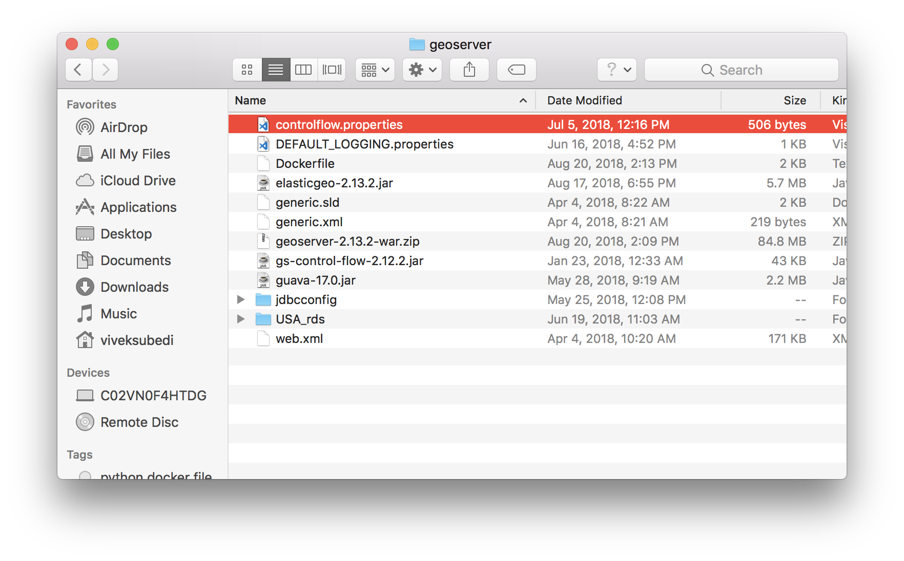

Purpose
Since, we are using docker architecture to build and deploy all of our services, requirement is to dockerize GeoServer for ElasticSearch and deploy to AWS
Background
GeoServer is an open source software server written in Java that allows users to share and edit geospatial data. Designed for interoperability, it publishes data from any major spatial data source using open standards. GeoServer is the reference implementation of the Open Geospatial Consortium (OGC) Web Feature Service (WFS) and Web Coverage Service (WCS) standards, as well as a high performance certified compliant Web Map Service (WMS). GeoServer forms a core component of the Geospatial Web.
ElasticGeo is plugin for GeoServer that provides a GeoTools data store that allows geospatial features from an Elasticsearch index to be published via OGC services using GeoServer. Both geo_point and geo_shape type mappings are supported. OGC filters are converted to Elasticsearch queries and can be combined with native Elasticsearch queries in WMS and WFS requests.
Dependency
- Geoserver war file
- ElasticGeo jar file
- Guava jar file
- Generic.sld file
Above dependencies can be dowloaded from following locations
- GeoServer War file (http://sourceforge.net/projects/geoserver/files/GeoServer/2.13.2/geoserver-2.13.2-war.zip)
- Download ElasticGeo Jar from GitHub and Unzip it (https://github.com/ngageoint/elasticgeo/releases/download/2.13.2/elasticgeo-2.13.2.zip)
- Guave-17.0 Jar File (https://mvnrepository.com/artifact/com.google.guava/guava/17.0/)
- Save all above files on specific folder
- Create Dockerfile on the same folder where you are saving geoserver war zip, elasticgeo jars and other related files
The folder would like following
Dockerfile would look like following. We should name it as Dockerfile:
Couple of things to point out here. We need guava version 17 because of ElasticGeo uses the version 17. On the other hand, We also need generic.sld because geoserver uses generic.sld as default
for styling if we don't define any style while creating a layer. When we create a layer, if we don't know the geometry type of geo_shape data type, geoserver will assign generic style.
We might run into issue down the road of developement Since generic.sld is empty, Once we define the
# Geoserver 2.13.2 Dockerfile
FROM tomcat:latest
# This Dockerfile is maintained by shree665@gmail.com
MAINTAINER shree665@gmail.com
# Set Dockerfile environment variables
ENV GEOSERVER_VERSION 2.13.2
ENV GEOSERVER_TEMP_NAME geoserver.zip
ENV ELASTICGEO_NAME elasticgeo-2.13.2.jar
ENV GUAVA_NAME guava-17.0.jar
ENV GENERIC_SLD generic.sld
ENV GENERIC_XML generic.xml
ENV GEOSERVER_XSTREAM_WHITELIST org.geoserver.**
# Run install unzip from yum repository
RUN apt-get -y update
RUN apt-get -y install unzip
# Download GeoServer Jars: GeoServer, ElasticGeo, and Guava
COPY geoserver-2.13.2-war.zip $GEOSERVER_TEMP_NAME
COPY elasticgeo-2.13.2.jar $ELASTICGEO_NAME
COPY guava-17.0.jar $GUAVA_NAME
COPY $GENERIC_XML $GENERIC_XML
COPY $GENERIC_SLD $GENERIC_SLD
# Set up the webapps folder
RUN unzip $GEOSERVER_TEMP_NAME -d $CATALINA_HOME/webapps \
&& ls -la $CATALINA_HOME \
&& mkdir $CATALINA_HOME/webapps/geoserver \
&& unzip $CATALINA_HOME/webapps/geoserver.war -d $CATALINA_HOME/webapps/geoserver \
&& rm $CATALINA_HOME/webapps/*txt \
&& rm -rf $CATALINA_HOME/webapps/target
# Cleanup and move files to correct dir
RUN rm $CATALINA_HOME/webapps/geoserver/WEB-INF/lib/guava*.jar \
&& rm $CATALINA_HOME/webapps/geoserver/data/styles/generic.xml \
&& mv $ELASTICGEO_NAME $CATALINA_HOME/webapps/geoserver/WEB-INF/lib/ \
&& mv $GUAVA_NAME $CATALINA_HOME/webapps/geoserver/WEB-INF/lib/ \
&& mv $GENERIC_XML $CATALINA_HOME/webapps/geoserver/data/styles/ \
&& mv $GENERIC_SLD $CATALINA_HOME/webapps/geoserver/data/styles/
# Replace web.xml to enable CORS
RUN rm $CATALINA_HOME/conf/web.xml
ADD web.xml $CATALINA_HOME/conf/
RUN set -x; rm -rf $GEOSERVER_TEMP_NAME
CMD ["catalina.sh", "run"]
We can also create docker image using S3 bucket as source for all of the requeired files. Dockerfile needs to change to download all the required jar from S3 bucket. Dockerfile will like follows to download required files from AWS S3
# Geoserver 2.13.2 Dockerfile
FROM tomcat:latest
# This Dockerfile is maintained by shree665@gmail.com
MAINTAINER shree665@gmail.com
#Argument from cmd
ARG S3_BUCKET_URL
# Set Dockerfile environment variables
ENV GEOSERVER_VERSION 2.13.2
ENV GEOSERVER_TEMP_NAME geoserver.zip
ENV GEOTOOLS_TEMP_NAME geotools.zip
ENV ELASTICGEO_NAME elasticgeo-2.13.2.jar
ENV CONTROL_FLOW gs-control-flow-2.13.2.jar
ENV GUAVA_NAME guava-17.0.jar
ENV GENERIC_SLD generic.sld
ENV GENERIC_XML generic.xml
ENV S3_BUCKET_URL ${S3_BUCKET_URL}/geoserver
ENV GEOSERVER_XSTREAM_WHITELIST org.geoserver.**
# Update curl and bash
RUN apk add --update curl bash && \
rm -rf /var/cache/apk/*
# Download GeoServer Jars: GeoServer, ElasticGeo, and Guava
RUN set -x \
&& curl -fSLk $S3_BUCKET_URL/geoserver-2.13.2-war.zip -o $GEOSERVER_TEMP_NAME \
&& curl -fSLk $S3_BUCKET_URL/elasticgeo-2.13.2.jar -o $ELASTICGEO_NAME \
&& curl -fSLk $S3_BUCKET_URL/guava-17.0.jar -o $GUAVA_NAME \
&& curl -fSLk $S3_BUCKET_URL/gs-control-flow-2.13.2.jar -o $CONTROL_FLOW
# Set up the webapps folder
RUN unzip $GEOSERVER_TEMP_NAME -d $CATALINA_HOME/webapps \
&& ls -la $CATALINA_HOME \
&& mkdir $CATALINA_HOME/webapps/geoserver \
&& unzip $CATALINA_HOME/webapps/geoserver.war -d $CATALINA_HOME/webapps/geoserver \
&& rm $CATALINA_HOME/webapps/*txt \
&& rm -rf $CATALINA_HOME/webapps/target
# Copy in Generic Styling
COPY $GENERIC_XML $GENERIC_XML
COPY $GENERIC_SLD $GENERIC_SLD
# Cleanup and move files to correct dir
RUN rm $CATALINA_HOME/webapps/geoserver/WEB-INF/lib/guava*.jar \
&& rm $CATALINA_HOME/webapps/geoserver/data/styles/generic.xml \
&& mv $ELASTICGEO_NAME $CATALINA_HOME/webapps/geoserver/WEB-INF/lib/ \
&& mv $GUAVA_NAME $CATALINA_HOME/webapps/geoserver/WEB-INF/lib/ \
&& mv $CONTROL_FLOW $CATALINA_HOME/webapps/geoserver/WEB-INF/lib/ \
&& mv $GENERIC_XML $CATALINA_HOME/webapps/geoserver/data/styles/ \
&& mv $GENERIC_SLD $CATALINA_HOME/webapps/geoserver/data/styles/
# Replace web.xml for CORS
RUN rm $CATALINA_HOME/conf/web.xml
ADD web.xml $CATALINA_HOME/conf/
RUN set -x; rm -rf $GEOSERVER_TEMP_NAME
CMD ["catalina.sh", "run"]
Build
We can run docker build -t geoserver:2.13.2 . command to build the geoserver image from the folder directory.
We should see Successfully built 7eeafe217b67 Successfully tagged geoserver:2.13.2 mesage at the end of the build log in our console.
The same image is also located in dockerhub here
References
Copyright of geoserver image is © wikipedia.org
{kind=link}
http://geoserver.org
https://github.com/ngageoint/elasticgeo
https://docs.docker.com/engine/reference/commandline/build/